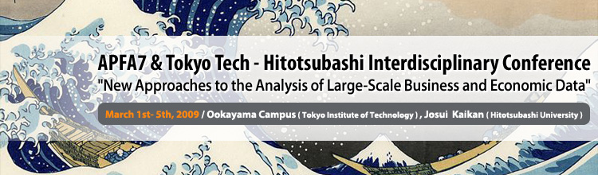

History:
APFA7: Applications of Physics in Financial Analysis
Conference series entitled Applications of Physics in Financial Analysis focuses on the analysis of large-scale Economic data. It has traditionally brought physicists and economists together to exchange viewpoints and experience (APFA1 in Dublin 1999, APFA2 in Liege 2000, APFA3 in London 2001, APFA4 in Warsaw 2003, APFA5 in Torino 2006, APFA6 in Lisbon 2007).
THIC: Tokyo tech - Hitotsubashi Interdisciplinary Conference:
This is the first interdisciplinary conference supported by Tokyo Tech (Tokyo Institute of Technology) and Hitotsubashi University.
Scope:
In recent years, as part of the increasing “informationization” of industry and the economy, enterprises have been accumulating vast amounts of detailed data,
such as high frequency transaction data in financial market and, point-of-sale information on individual items in the retail sector. Similarly, vast amounts of data are now available on business networks
based on interfirm transactions and shareholdings. In the past, such types of information were studied only by economists and management scholars. However, more recently, researchers from other fields,
such as physics, mathematics, and information sciences have become interested in such kind of data and, based on novel empirical approaches to search for regularities and “laws”
akin to those in the natural science, have produced intriguing results.
THIC+APFA7 is an interdisciplinary conference that focuses on the analysis of such large-scale business data and, for the first time, is jointly supported by Tokyo Tech (Tokyo Institute of Technology)
and Hitotsubashi University. Its aim is to establish the fundamental analytical techniques and data collection methods for such a task taking into account the results from a variety of academic disciplines.
| Dates | March 1st, 2009 - March 5th, 2009 |
|---|---|
| Place | Ookayama Campus (Tokyo Institute of Technology) Josui Kaikan (Hitotsubashi University) |
| Host Organization | Tokyo Institute of Technology, Hitotsubashi University |
| Organizer | Misako Takayasu (Department of Computational Intelligence and Systems Science, Tokyo Institute of Technology) Tsutomu Watanabe (Institute of Economic Research, Hitotsubashi University) |
| Supporting Organization |  Research Institute of Economy,Trade and Industry (RIETI), IAA Research Institute of Economy,Trade and Industry (RIETI), IAA
|
| Cooperated Academic Societies |
The Physical
Japanese
Information Processing Society of Japan
The Japanese Society for Artificial Intelligence
Japan Association for Evolutionary Economics |
Sponsors |
Monex Group, Inc.
Kakaku.com, Inc.
ASTMAX Co.,Ltd.
Sony Computer
CMD Laboratory Inc. |